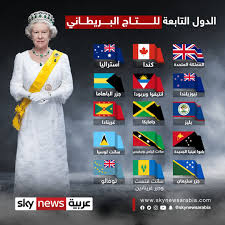

<!DOCTYPE html>
<html dir="rtl"></html>
<head>
  <style>
    body{background-color:rgb;}  
    img{border-radius: 10%;border: solid;border-color:rgb}
  a:hover{background-color: azure;}
  div{background-color: rgb;border-color: antiquewhite;}
  table{background-color: rgb;}
    </style>
 
  <meta charset="UTF-8">
  <meta name="viewport" content="width=device-width, initial-scale=1.0">
  <title>بريطانيا</title>
</head>
<body>
  <nav><h1 align="center"> 
    
     
    <a href="index.html"target="_blank">الصفحة الرئيسية </a>&nbsp;
    <a href="Attractions.html"target="_blank">المعالم السياحية</a>&nbsp;&nbsp;
    <a href="Famous foods.html" target="_blank">الأكلات المشهورة</a>&nbsp;&nbsp;
    <a href="Customs and traditions .html" target="_blank">العادات والتقاليد </a>&nbsp;&nbsp;
    <a href="Politics.html" target="_blank">  السياسه </a>&nbsp;&nbsp;
    
    <hr color="black" size="6px">

</h1></nav>
<h1  align="center"><font color="black"face="Andalus"></font></h1>
<table align="center"  border="1" width="60%"  height="60%">
  <tr>
      <th><h2 align="center"><font color="red">تقسم هذه الدولة  </font></h2></th>
      <th><h2 align="center"><font color="red">الصوره والوصف </font></h2> </th>
  </tr>
  <tr>
  <td> <h2 align="center"><font color="black"> التاج
    <br>الملك البريطاني، الملكة إليزابيث الثانية، هي رئيسة المملكة المتحدة. على الرغم من أنها لا تشارك إلا قليلاً في الحكومة، إلا أن التاج لا يزال هو المنبع الذي تكمن فيه السلطة التنفيذية النهائية على الحكومة.  تُعرف هذه الصلاحيات بالامتياز الملكي، ويمكن استخدامها لعدد كبير من الأشياء، مثل إصدار أو سحب جوازات السفر، إقالة رئيس الوزراء، أو حتى إعلان الحرب.

    يتم تفويض الصلاحيات من الملك شخصيا، باسم التاج، ويمكن تسليمها إلى وزراء مختلفين أو غيرهم من ضباط التاج، ويمكن أن تتجاوز عن قصد موافقة البرلمان. تعقد رئيسة حكومة صاحبة الجلالة، ورئيس الوزراء، اجتماعات أسبوعية مع السيادة، حيث قد تعبر عن مشاعرها، أو تحذر، أو تنصح رئيس الوزراء في عمل الحكومة.
    
    وفقًا للدستور غير المدون للمملكة المتحدة، يتمتع الملك بالصلاحيات التالية:
   </font></h2></td>
 
  <td> <p align="center"></p></td>
  </tr>
  <tr>
  <td><h2 align="center"><font color="black">رئيس الوزراء
    <br>لا يتأسس منصب رئيس الوزراء بموجب أي قانون أو وثيقة دستورية، بل تأسس بموجب اتفاقية قائمة منذ عهد بعيد، يعين بموجبها النظام الملكي الحاكم الشخص الذي من المرجح أن يحظى بثقة مجلس العموم كرئيس للوزراء، ويكون هذا الشخص عادة زعيم الحزب السياسي أو زعيم ائتلاف الأحزاب الذي يشغل أكبر عدد من المقاعد في مجلس العموم. لم يُجر تأسيس منصب رئيس الوزراء، بل تطور، على نحو بطئ ومتدرج، على مدى ثلاثمائة سنة نتيجة للعديد من القوانين البرلمانية، والتطورات السياسية، وحوادث التاريخ. من أجل ذلك، فإن أفضل فهم لمنصب رئيس الوزراء يحدث عبر المنظور التاريخي. يمكن العثور على جذور تأسيس المنصب في التغييرات الدستورية التي حدثت أثناء التسوية الثورية (1688-1720) وما نتج عنها من انتقال السلطة السياسية من الملك إلى البرلمان. على الرغم من أن الملك لم يُجرد من السلطات القديمة وبقى، على نحو قانوني، رئيسًا للحكومة، أصبح من الضروري، سياسيًا، أن يحكم من خلال رئيس وزراء يمكنه أن يحصل على أغلبية في البرلمان.
  </font></h2></td> 
  <td> <p align="center"></p></td>
 </tr>
 <tr>
  <td><h2 align="center"><font color="black"> البرلمان 
    <br>رلمان المملكة المتحدة (بالإنجليزية: Parliament of the United Kingdom) هو السلطة التشريعية العليا للملكة المتحدة وملحقات التاج البريطاني وأقاليم ما وراء البحار البريطانية. يملك برلمان المملكة المتحدة وحده السيادة التشريعية، وبالتالي يملك السلطة على كل الهيئات السياسية الأخرى في المملكة المتحدة وأقاليم ما وراء البحار.
  </font></h2></td>  
  <td>    <p align="center"></p></td>
 </tr>
 


  
</table>

<div> 
<p align="center">     جميع الحقوق محفوظةللطالبتين:شما الهاشمي و البندري الزرعي تحت اشراف أ.سليمة الهاشمي &copy; </p>

</div>


</body>
</html


